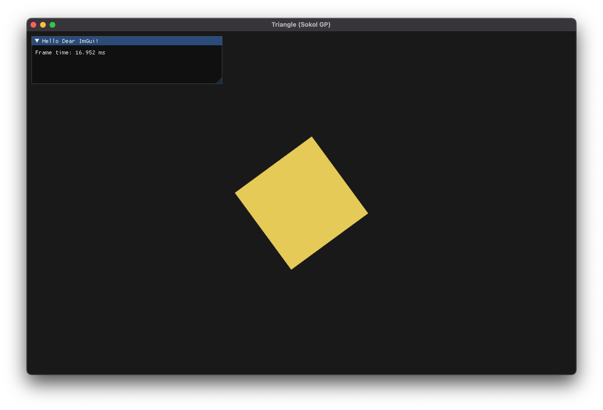

Sokonban is puzzle type game, where you push around objects and put them on ‘trigger’ to open door, to get to your goals.
Game will be written in C with sokol gfx and sokol gp.
We will be using zig compiler as build system, this will make building project and make cross-compilation easier. Though, it is completely possible for you to use your own build systems. You can download zig from here.
git clone https://github.com/BlackGoku36/Sokol2DStarterProject.gitzig build runYou should see something like this (rotating colorful square):

At moment only supported platform are MacOS (Metal) and Windows (OpenGL). But it should be pretty easy compile for other gapi backends and OSes.
(Hint: You just have to editbuild.zig!).
Check code repository: Cokoban